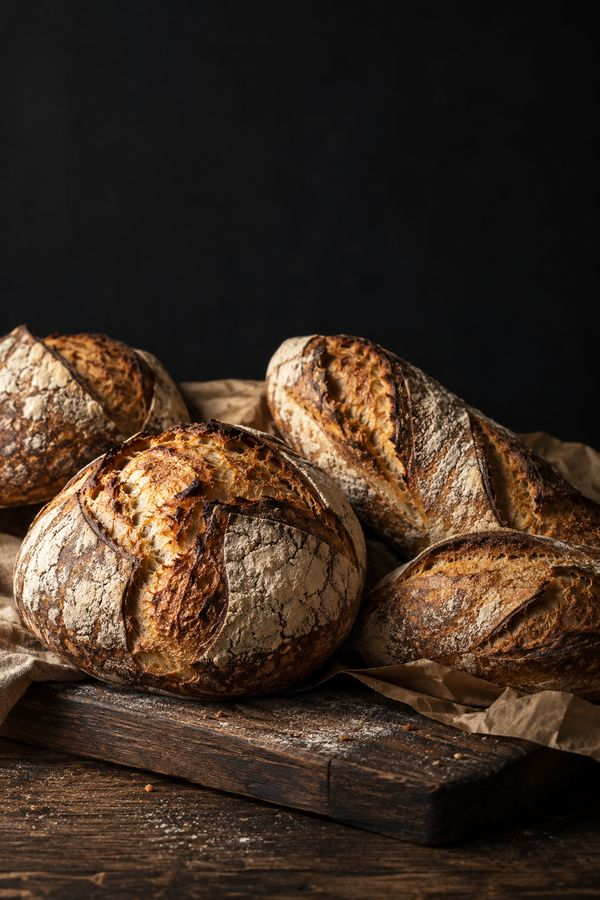
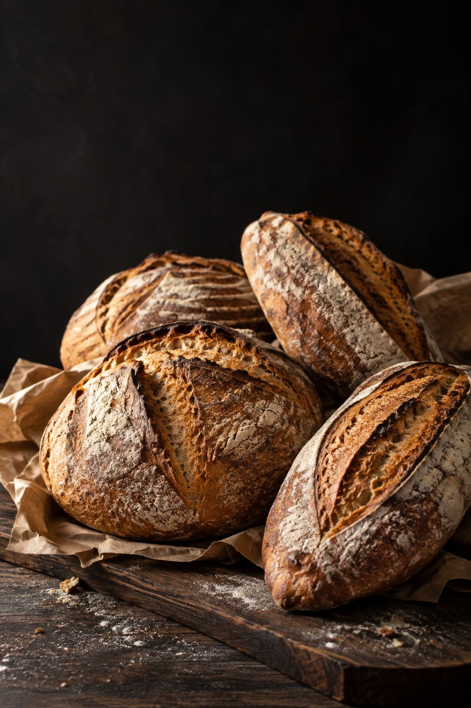
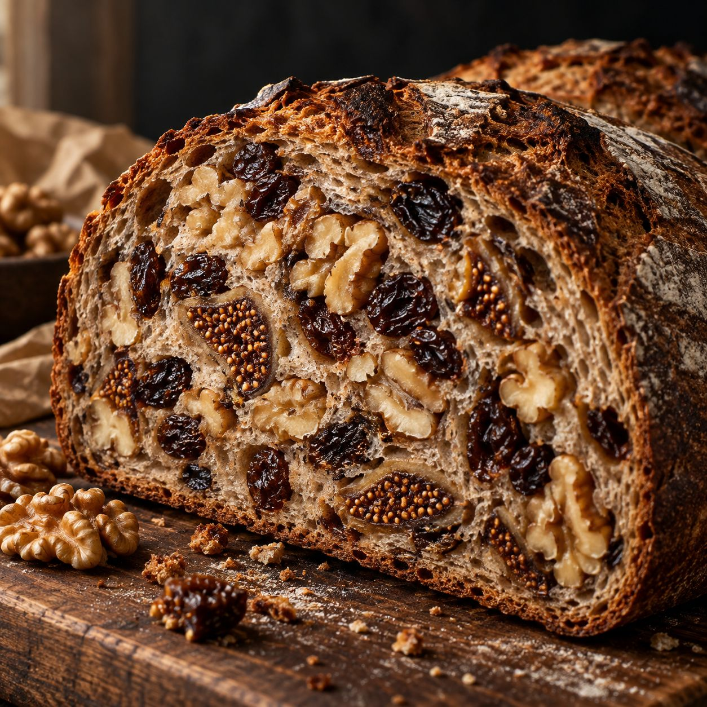
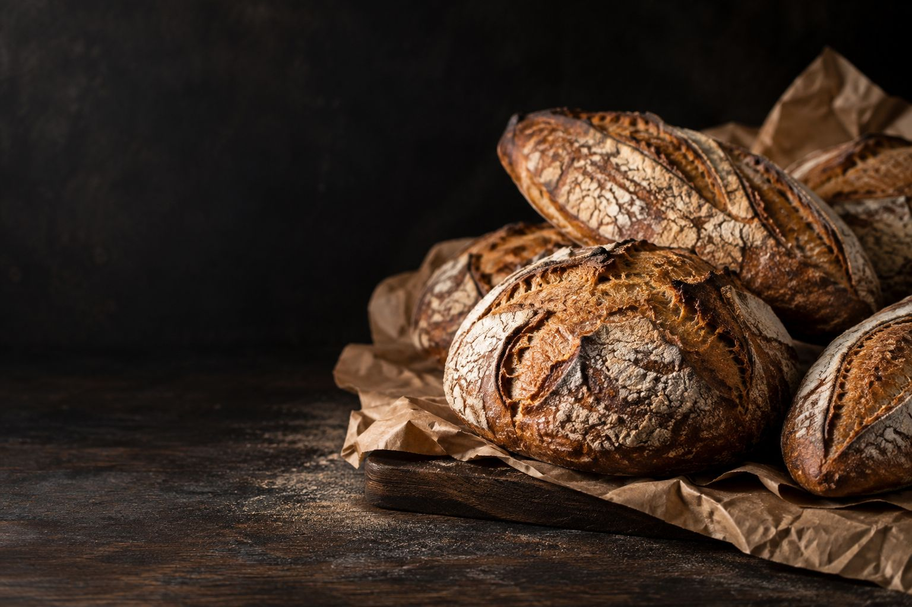

味の想像が、つかない。
口コミでくり返し語られるのは、ほかでは
- 01ほかにはない、個性的な味のパンが多い
- 02ハード系に、ナッツやレーズンがたっぷり
- 03種類が多く、値段は良心的という声も

写真はイメージです4.5Googleの口コミ 161件の平均（2026年10月）

Boulangerie ／ 市川市南行徳
ふつうの日に、
ふつうじゃないパンを。
口コミでくり返し語られるのは、ほかでは

写真はイメージです外は、ずっしり固い。スクロールすると、ナイフが進みます。
切ると、しっとりした中身が見えてきて。
ナッツとレーズンが、ぎっしり。これほど具の多い
固いパンのおいしさに、はじめて気づいた。そんな声が届くハード系です。
※口コミの要旨をもとにした図です。実際の断面や

写真はイメージですひと切れごとに、
具が顔を出す。ナッツやレーズンがとにかく多い、という
カードをタップすると答えが出ます（横にスワイプで次へ）
※Googleの口コミで
口コミには、10時ごろに
※口コミの要旨から作った目安です。焼き上がりの時間を、実際の内容に差し替えます。
営業日・時間は

写真はイメージです臨時のお休みは Instagram でお知らせします。
口コミでは、午前中のうちに
取り置きの可否と方法を、お店のルールに合わせて書きます。
使える支払い方法を、実際の内容に合わせて書きます。
口コミでは、家で